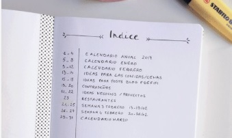
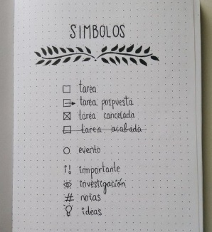
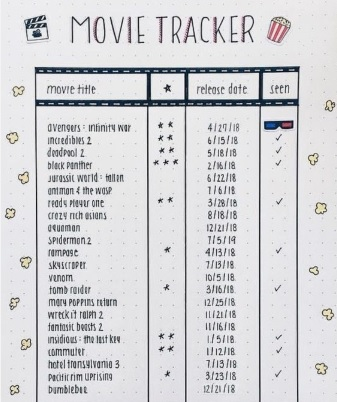

|
Hasta aquí todo muy bello, pero...
¿Cómo se hace? Lo primero que debes hacer es elegir un cuaderno
que te guste verdaderamente. Recuerda que será tu compañero
todo el año.
Ahora que lo tienes, debes saber que el sustento del método es
trabajar a partir de módulos, es decir, respetando ciertas
"secciones" dentro de la agenda. Una vez que las conozcas y sepas
cómo aplicarlas, ya estarás iniciado en el mundo Bullet Journal.
Numerar las hojas
Esto es muy importante y lo primero que debes hacer. Si, puede
ser un poco laborioso pero todas las hojas tienen que tener número.
Creéme, lo agradecerás luego. Los Bullet Journals originales ya
traen las hojas numeradas, pero solo te tomará unos 10 minutos
hacerlo a mano.
Índice
Ahora que te has tomado la molestia de numerar todas las hojas,
debes saber que la razón de ello está aquí: en el índice.
Las primeras dos hojas son, quizá, las más importantes del BuJo.
Es que son las que permiten encontrar rápidamente cualquier “entrada”
dentro del bullet. Básicamente, es lo que le da esa flexibilidad:
puedes anotar cualquier cosa en cualquier lado, y luego sólo tienes
que indexarla.

Símbolos
Es importante que definas un símbolo para cada tipo de anotación.
Ryder propone 3: punto para las tareas, círculo para eventos,
y línea para notas. Además, agrega una estrella para prioridad.
Tú puedes elegir tantos como quieras y los que más te gusten.
La finalidad es que puedas ver rápidamente de qué se trata cada
punto de tu cuaderno.

Registro anual
Aquí irás poniendo todas las cosas que debes hacer los distintos
meses del año.
Este módulo es muy importante para dejar un registro de las cosas
que van a pasar más adelante.

Registro mensual
Al iniciar cada mes, debes hacer un registro mensual,
que sirve para tener una mirada rápida de todos los compromisos
que tienes para ese mes.
El registro mensual debe ocupar una sola página o a lo sumo dos,
pero de forma tal que puedas verlo todo en el primer vistazo,
de forma rápida y clara.

Registro diario
Finalmente, toca hacer un registro diario, donde cada día
irás apuntando en forma de lista todo lo que tienes que hacer.

Migración
Se hace al concluir un mes y planificar el siguiente.
En ese momento, debes mirar si te han quedado tareas
sin realizar.
Colecciones
Posiblemente a medida que comiences a usar el Bullet Journal
descubrirás que tienes recurrentemente notas de cierto tema.
Por ejemplo, puede que apuntes un libro que te han recomendado
para no olvidarlo, el título de una película que te ha gustado
o una idea nueva para agregar a tu menú semanal.
Cuando se acumulan varias anotaciones sobre un mismo tema,
puedes crear una colección: es decir, una página donde anotas
esas ideas, todas juntas. De este modo, puedes tener una colección
de "Libros pendientes", "películas preferidas", "menúes saludables",
etc.

|